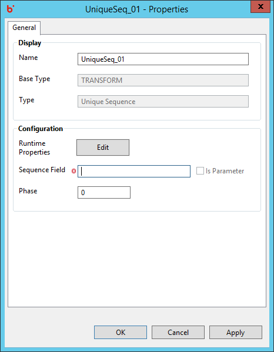

Hydrograph Help
Hydrograph Help
Unique Sequence Properties
Hydrograph Release Version 1.0
Properties for the Unique Sequence component can be viewed by Double click->component on canvas. The properties contains the 'General' tab and falls under the Transform category in the component palette.
General Properties:

Display
- Name - The Name field will specify the name of the component as desired by the user
- Base Type - Base Type signifies the basic operation area of the component. In this case it is of Base Type Transform.
- Type - Type further categorizes the component to detailed operation that it intends to perform. Here it is of type Unique Sequence.
Configuration
- Runtime Properties - Runtime properties are used to override the Hadoop configurations specific to Unique Sequence component at run time. User is required to enter the Property Name and Value in the runtime properties grid.
- Sequence Field - Accepts the name of the field that will contain sequential integer values.
- Phase - Phase simply accepts a numeric number starting from 0 and signifies the phase this component will execute in. By default this is 0.